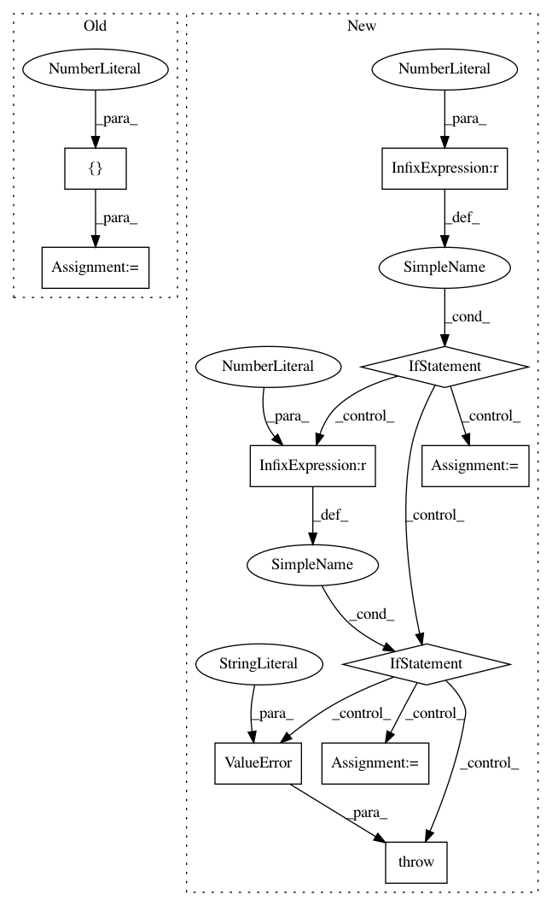

072e5680310c1cefef7e520c16bb20e92da3016d,geomstats/geometry/hypersphere.py,HypersphereMetric,exp,#HypersphereMetric#Any#Any#,342
Before Change
norm_tangent_vec = gs.tile(norm_tangent_vec, [n_tiles_vec, 1])
n_tiles_base_point = gs.cast(
gs.divide(n_exps, n_base_points), gs.int32)
base_point = gs.tile(base_point, [n_tiles_base_point, 1])
mask_0 = gs.isclose(norm_tangent_vec, 0.)
mask_non0 = ~mask_0
After Change
n_coef_1 = n_tangent_vecs
if n_coef_1 != n_base_points:
if n_coef_1 == 1:
coef_1 = gs.squeeze(coef_1, axis=0)
einsum_str = "i,nj->nj"
elif n_base_points == 1:
base_point = gs.squeeze(base_point, axis=0)
einsum_str = "ni,j->nj"
else:
raise ValueError("Shape mismatch in einsum.")
exp = (gs.einsum(einsum_str, coef_1, base_point)
+ gs.einsum("ni,nj->nj", coef_2, proj_tangent_vec))
return exp
In pattern: SUPERPATTERN
Frequency: 3
Non-data size: 10
Instances
Project Name: geomstats/geomstats
Commit Name: 072e5680310c1cefef7e520c16bb20e92da3016d
Time: 2020-01-17
Author: ninamio78@gmail.com
File Name: geomstats/geometry/hypersphere.py
Class Name: HypersphereMetric
Method Name: exp
Project Name: geomstats/geomstats
Commit Name: c86fbbe0c0bca22391d46177c8850d71c33b2e1d
Time: 2020-01-17
Author: ninamio78@gmail.com
File Name: geomstats/geometry/riemannian_metric.py
Class Name: RiemannianMetric
Method Name: inner_product
Project Name: bethgelab/foolbox
Commit Name: 91e12bf45cc3246241b32e7e4702f2bf72f3894e
Time: 2018-10-20
Author: jonasrauber@users.noreply.github.com
File Name: foolbox/attacks/spatial.py
Class Name: SpatialAttack
Method Name: __call__